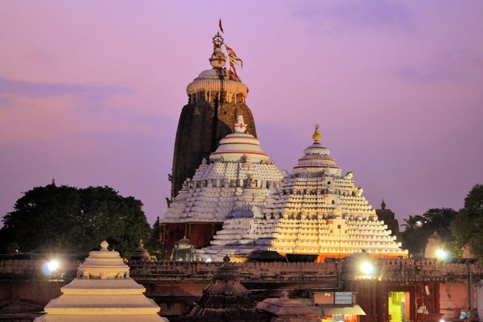

Puri is famous for the world famous Shri Jagannath Temple & Longest Golden Beach. It is one of the Dhamas (Holiest of the holy place) out of four Dhamas i.e. Puri, Dwarika, Badrinath & Rameswar, in India. Mahaprabhu Shri Jagannath alomg with sister Devi Subhadra and elder brother Mahaprabhu Shri Balabhadra are being worshipped in Puri (The Purusottama Kshetra). The deities are seated on the Bejeweled Pedestal (Ratna Simhassana). Shri Jagannath Puri Temple is one of the most impressing monuments of the Indian State Odisha, was constructed by a famous king of Ganga Dynasty Ananta Varman Chodaganga Deva dating back to 12th century at the seashore Puri. The main temple of Shri Jagannath is an impressing and amazing structure constructed in Kalinga architecture, with a height of 65 meters placed on an elevated platform. There are so many festivals of Sri Jagannath during the year observed in Puri. Which are Snana Yatra, Netrotsava, Ratha Yatra (car festival), Sayan Ekadasi, Chitalagi Amabasya, Srikrushna Janma, Dussehra etc. The most important festival is the World famous Rath Yatra (Car Festival) & Bahuda Yatra. A large crowd is gathered to witness Mahaprabhu Shri Jagannath durig this festival.
